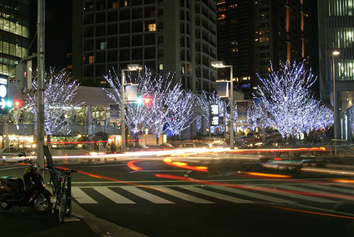

Roppongi is a district of Tokyo, Japan, famous for the affluent Roppongi Hills development area and popular night club scene. A few foreign embassies are located near Roppongi, and the night life is popular with locals and foreigners alike. It is in the central part of Tokyo, south of Akasaka and north of Azabu.
Packed to the brim with bars, clubs, and all-night revelers, Roppongi is without a doubt one of Tokyo’s most famous nightlife districts.
Since the post-war era, when it served as a hangout for Allied forces, it’s been popular with non-Japanese, and to this day attracts an outsize percentage of ex-pats, international tourists, as well as Japanese salarymen, which is reflected in the area’s higher than average entry and drink prices. Roppongi is a real mishmash, filled with everything from upscale bars, jazz venues and western-style clubs, to countless dive bars along with more sleazy establishments. Some places are slightly worn-in, but the area is always packed on weekends and an option if you’re looking for a big night out.
Although generally safe, be aware that Roppongi can get rather loud and crowded at night, as well as attracting its fair share of touts.